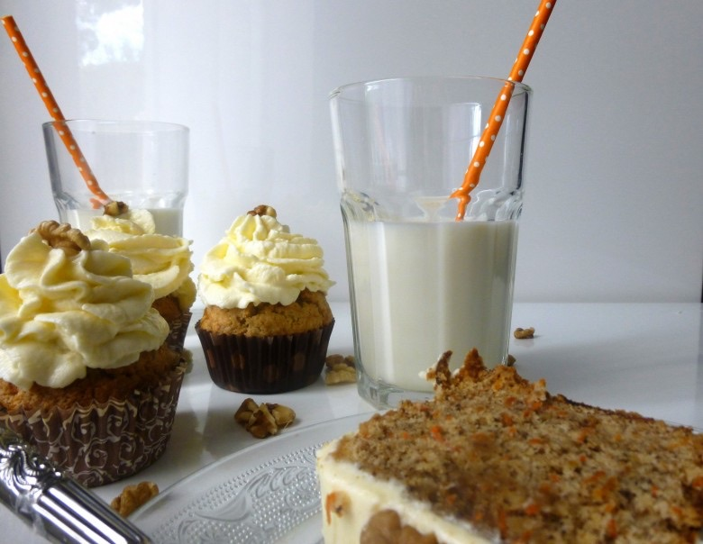

Carrot Cupcakes

Ça vous dit un carrot cake ou vous êtes comme moi et vous préferez les carrot cupcakes?
D’après les nouvelles que j’ai de la France il ne fait pas très beau voir même pas du tout alors je me suis dit qu’une petite recette ça fait toujours du bien au moral!! J’avais gardé quelques petites recettes de côté avant mon départ 🙂
C’est pourquoi j’ai choisi de partager avec vous la recette du Carrot Cake version cupcakes. Un gâteau aux carottes? Au départ ça ne me disait trop rien puis un jour je me suis lancée et depuis j’en suis totalement fan ! Vu que je ne m’arrête pas souvent de faire des cupcakes c’était l’occasion tester cette recette sous forme de carrot
Côté recette, il existe un tas de versions! Celle-ci est tout simplement délicieuse et je pense que le glaçage au cream cheese est indispensable!
Beaucoup de personne pense que le Carrot Cake nous vient des États Unis mais c’est totalement faux! A l’origine il s’agit d’une spécialité Suisse. Les Américains et les anglais ont ensuite décidé d’ajouter un glaçage à base de cream cheese et par la suite, c’est un gâteau qui y est devenu très populaire.
Je vous laisse découvrir cette recette version cupcakes et vous me direz ce que vous en pensez!
Ingrédients
- oeufs - 3
- noix - 100 g
- huile d'olive - 200 ml
- carottes fraiches - 150 g
- sucre - 225 g
- farine - 300 g
- canelle - 2càc
- levure chimique - 1/2 càc bien rase
- bicarbonate de soude - 1/2 càc bien rase
- cream cheese (philadelphia, St Moret..) - 550 g
- beurre à temp ambiante - 160 g
- sucre glace - 2 càs
Instructions
- Pour commencer, mixer les noix et râper finement les carottes
- Dans un saladier mélanger les noix, la farine, la levure, le bicarbonate et la cannelle. Réserver
- Dans le bol de votre robot ou dans une jatte casser les œufs, ajouter le sucre et battre immédiatement jusqu’à obtenir un mélange blanc un peu mousseux
- Verser progressivement l'huile d'olive tout en continuant de mélanger (un peu comme pour une mayonnaise)
- Avec une cuillère en bois ajouter progressivement les carottes râpées, remuer
- Pour finir, incorporer petit à petit les aliments secs (mélange farine, levure noix etc..)
- Enfourner à 200° pendant 20-25 min
- Laisser bien refroidir avant de glacer
- Battre le beurre et ajouter le cream chesse
- Attention de ne pas trop mélanger car le glaçage doit rester légèrement ferme pour ne pas retomber sur le gâteau
- Ajouter le sucre glace et mélanger (si jamais votre glaçage est trop liquide vous pouvez le garder au frais et le retravailler un peu par la suite).

Les tips de la communauté
Les commentaires ne contiennent pas d'informations exploitables supplémentaires.